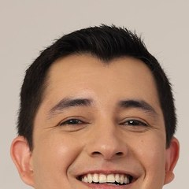

Início · Coluna · Escoliose, deformidades e fraturas
Escoliose, deformidades e fraturas: quando a forma da coluna muda.
Curvaturas da coluna e fraturas das vértebras estão entre as áreas em que o Dr. Anderson atua — da observação à cirurgia, conforme o caso. A indicação é individual, definida em consulta.

Curvatura
Escoliose
Escoliose é a curvatura lateral da coluna, com rotação das vértebras. A forma mais comum aparece na adolescência, muitas vezes sem causar dor, e é percebida por um ombro mais alto, a cintura assimétrica ou uma saliência nas costas ao inclinar o corpo para a frente.
O tratamento depende do tamanho da curva e de quanto ainda falta crescer: pode ser observação com consultas periódicas, uso de colete em casos selecionados ou cirurgia nas curvas maiores ou que avançam.
Adulto
Deformidades da coluna no adulto
No adulto, curvaturas podem surgir ou aumentar com o desgaste dos discos e das articulações. Dor nas costas, cansaço para ficar em pé, inclinação do tronco para a frente ou para o lado e dor nas pernas ao caminhar são queixas comuns.
O tratamento das deformidades da coluna está entre as áreas de atuação do Dr. Anderson. Na maior parte das vezes começa sem cirurgia. A indicação é individual, definida em consulta.
Trauma
Fraturas por trauma
Quedas de altura, acidentes de trânsito e de trabalho podem fraturar as vértebras. O Dr. Anderson é ortopedista e traumatologista e atua no tratamento de fraturas da coluna, que vão do tratamento com colete à cirurgia de estabilização, conforme o tipo de fratura e o envolvimento dos nervos.
Dor forte na coluna depois de queda ou acidente, formigamento ou fraqueza: não movimente a pessoa e procure o pronto-socorro mais próximo ou o SAMU (192).
Osteoporose
Fraturas por osteoporose
Na osteoporose, uma vértebra pode se achatar com um esforço pequeno — às vezes ao tossir ou levantar algo leve. A dor costuma ser súbita, no meio das costas, e com o tempo pode haver perda de altura e aumento da curvatura.
Além de tratar a dor e a fratura, é importante tratar a osteoporose para reduzir o risco de novas fraturas.
Decisão
Como se decide o tratamento
- O examePostura, curvatura, mobilidade e avaliação neurológica.
- A imagemRaio-X da coluna inteira, e ressonância ou tomografia quando necessárias.
- A conversaSintomas, idade, fase de crescimento, saúde dos ossos e o que você espera do tratamento.
- O planoObservação, reabilitação, colete ou cirurgia, decididos em conjunto. A indicação é individual, definida em consulta.
Dúvidas frequentes
Perguntas comuns
Mochila pesada causa escoliose?
Não. A escoliose mais comum da adolescência não é causada por mochila ou postura, embora o peso excessivo possa causar dor nas costas.
Escoliose sempre precisa de cirurgia?
Não. A maioria das curvas é pequena e só é acompanhada. A cirurgia é reservada a casos selecionados.
Quem tem osteoporose deve evitar exercício?
Não — exercício orientado é parte do cuidado. O tipo de atividade é ajustado ao seu caso.
Fratura na coluna sempre opera?
Não. Muitas fraturas são tratadas sem cirurgia. Depende do tipo, da estabilidade e dos nervos. A indicação é individual, definida em consulta.
Agende
Dor na coluna merece uma avaliação com calma.
Consulta com hora marcada no Edifício Premier Medical and Business, em Santa Mônica. Fale com o consultório pelo WhatsApp (75) 99919-9595.